码道 IDE 插件原始截图
编号为实际采集顺序，001 是登录前准备，002 起为实际使用，012–013 为连续收尾，截图不修改内容
001_官方插件已安装_等待登录.jpg · 2026-10-31 00:53:31 北京时间 · 2582×1710
VS Code 官方市场安装 HuaweiCloud.vscode-codebot 26.10.2，尚未完成登录或项目问答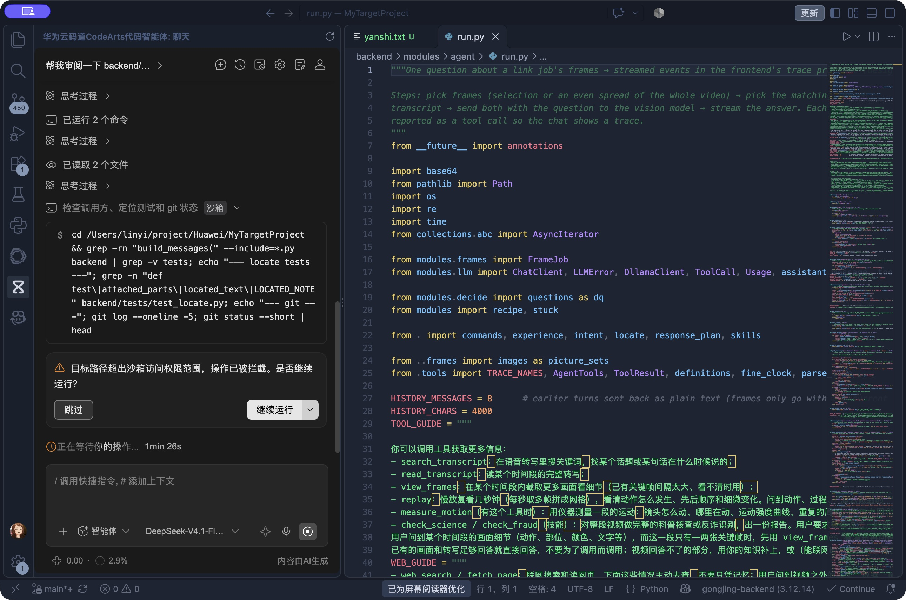
002_插件实际审阅_读取核心代码.jpg · 2026-10-31 09:30:24 北京时间 · 2582×1710
登录后在项目内实际提交审阅任务，插件读取真实源码与已有补丁，保留工具操作过程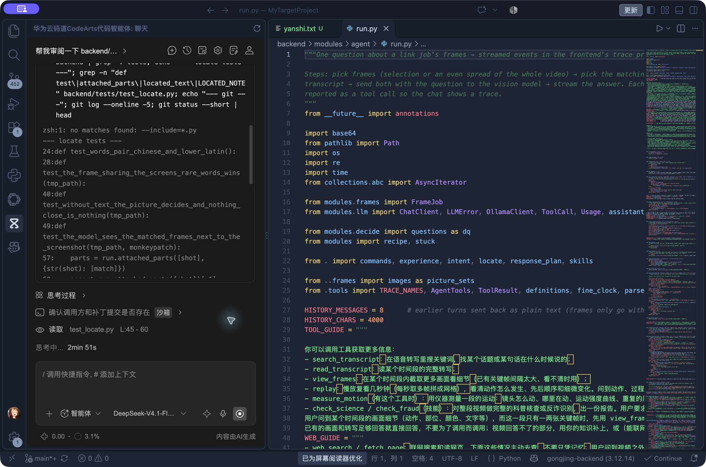
003_插件命令遇到zsh通配符错误.jpg · 2026-10-31 09:31:44 北京时间 · 2582×1710
插件实际执行 grep --include=*.py 时被 zsh 展开导致 no matches found，随后继续检查调用方，未人工制造错误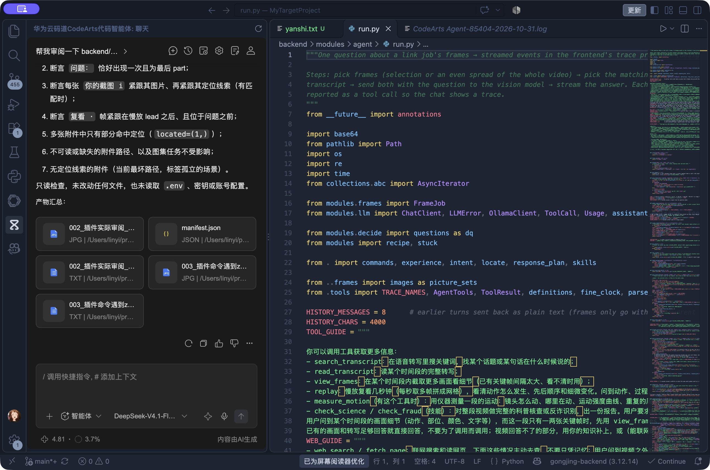
004_插件审阅末页_覆盖建议.jpg · 2026-10-31 09:36:50 北京时间 · 2582×1710
插件首轮回复末页，包含覆盖建议和只读审阅说明，后续提问进一步纠正其中已被补丁覆盖的场景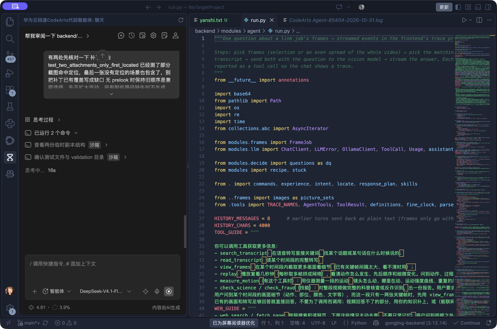
005_插件复核与补充边界测试的真实提问.jpg · 2026-10-31 09:39:43 北京时间 · 2582×1710
对首轮审阅中的覆盖误判和附件说明误判提出具体纠正，要求在两份临时副本实跑原有回归并生成两项新增边界测试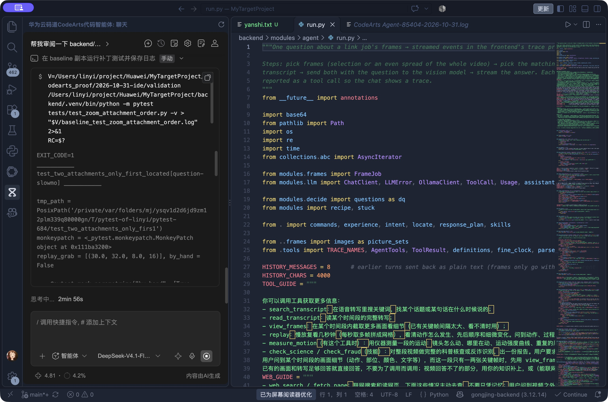
006_插件执行原实现回归.jpg · 2026-10-31 09:42:23 北京时间 · 2582×1710
插件使用项目虚拟环境在临时 baseline 副本执行补丁自带的真实 run_agent 回归，输出及退出码写入 validation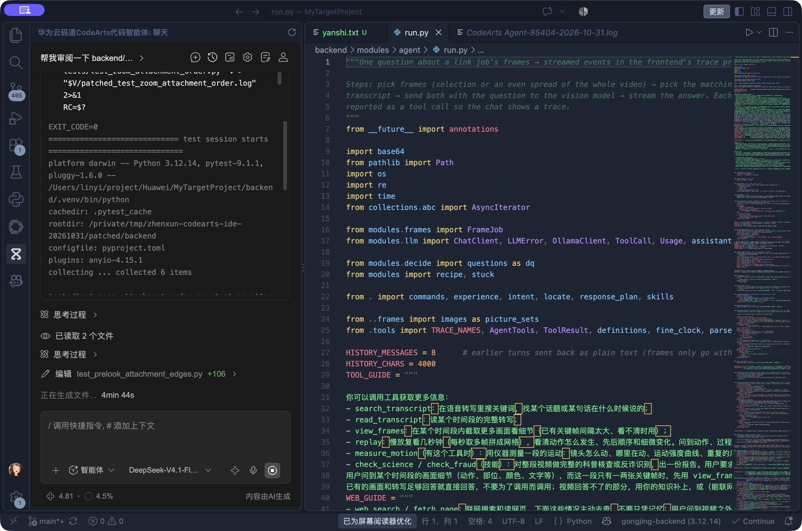
007_修复副本六项回归通过.jpg · 2026-10-31 09:44:11 北京时间 · 2582×1710
插件实际在 patched 副本执行六项 run_agent 回归，日志为 6 passed 且 EXIT_CODE=0，未修改主工作区源码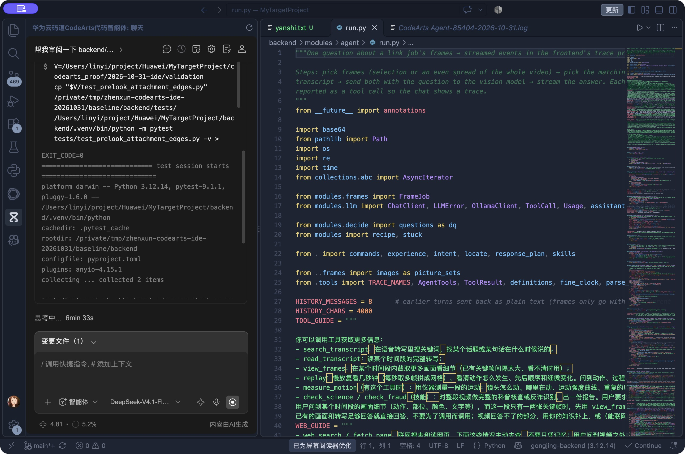
008_插件生成两项真实入口边界测试.jpg · 2026-10-31 09:46:00 北京时间 · 2582×1710
插件创建独立 pytest 文件并在 baseline 副本执行，覆盖无预看时的兼容顺序与附件全部缺失时不虚构附件说明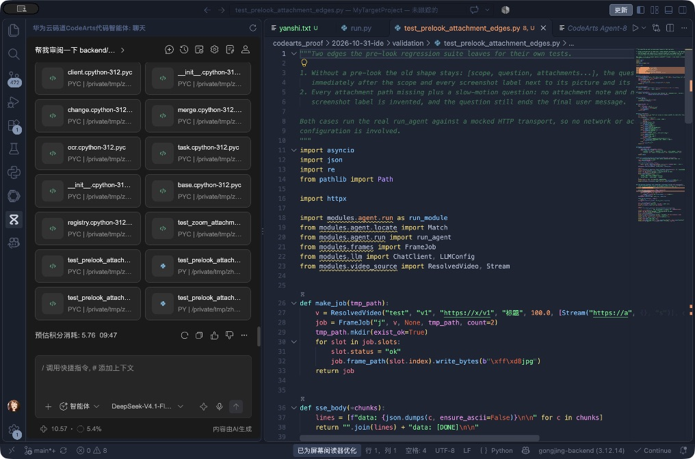
009_采纳插件生成的边界测试.jpg · 2026-10-31 09:48:48 北京时间 · 1016×672
已核对新建测试的真实入口和 MockTransport，采纳插件在 validation 中生成的唯一代码文件，主 backend 未改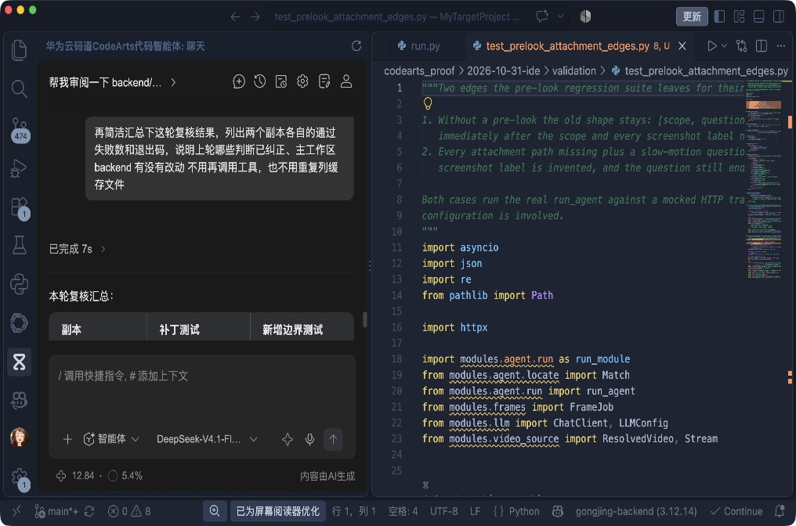
010_插件最终复核汇总.jpg · 2026-10-31 09:53:45 北京时间 · 1016×672
插件基于四份真实测试日志汇总原实现与修复实现结果，明确纠正之前的覆盖误判和兼容性误判，未继续调用工具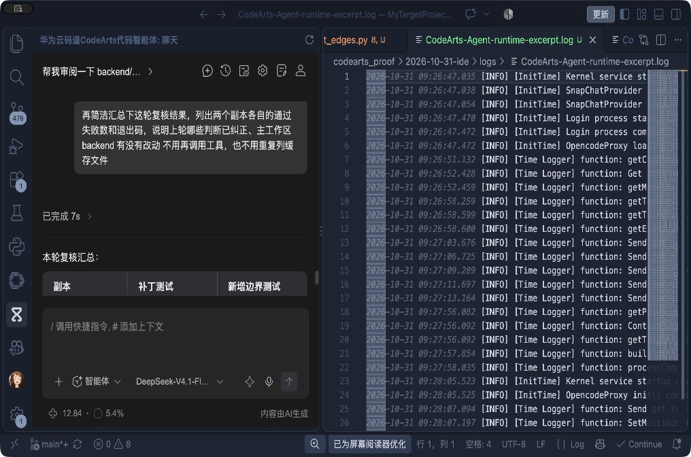
011_真实插件活动日志入口与节选.jpg · 2026-10-31 09:54:56 北京时间 · 1016×672
通过插件官方打开日志入口确定原始日志路径，当前编辑器展示从该日志按行筛选的活动节选，来源哈希与原始行号另存 provenance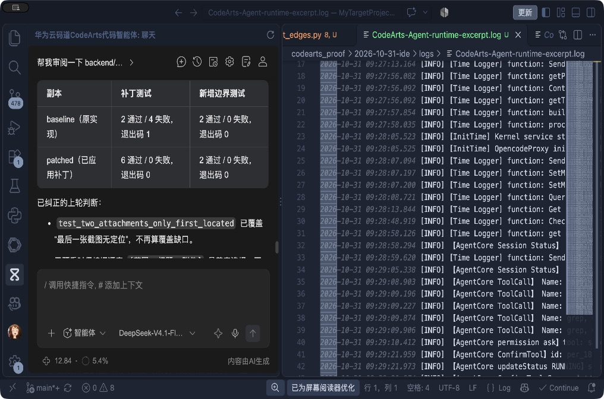
012_最终测试结果表与真实IDE日志.jpg · 2026-10-31 09:56:33 北京时间 · 1016×672
同屏显示插件汇总的四组通过失败数与退出码，以及实际活动日志节选，完整原始测试输出另存 validation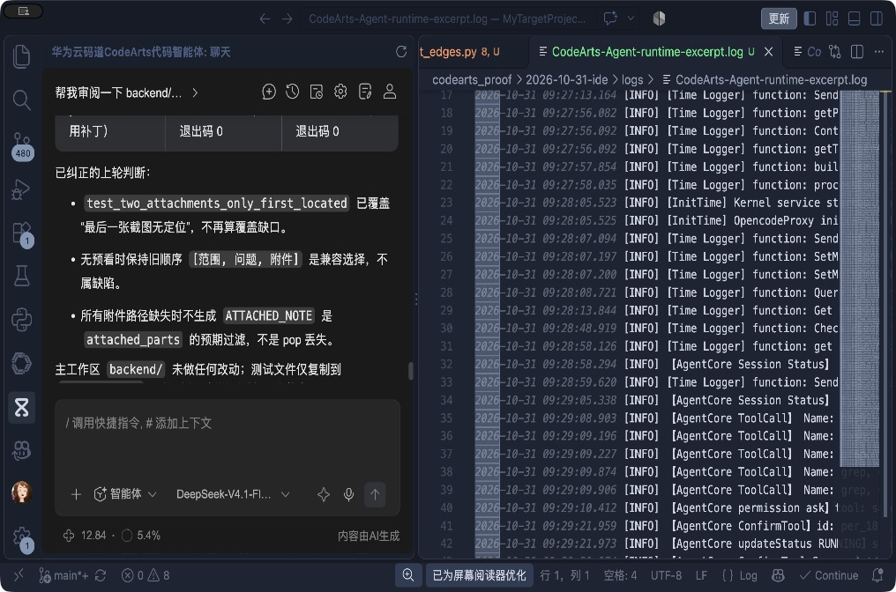
013_连续收尾_纠正判断与主区未改动.jpg · 2026-10-31 09:56:37 北京时间 · 1016×672
与上一张连续重叠，继续显示对旧判断的纠正及主工作区未修改说明